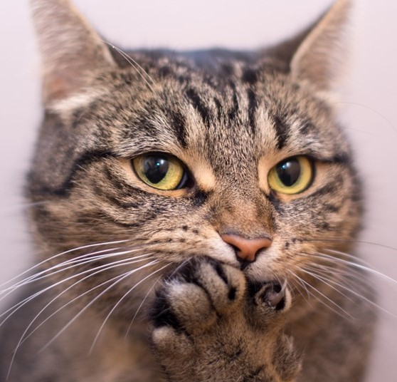
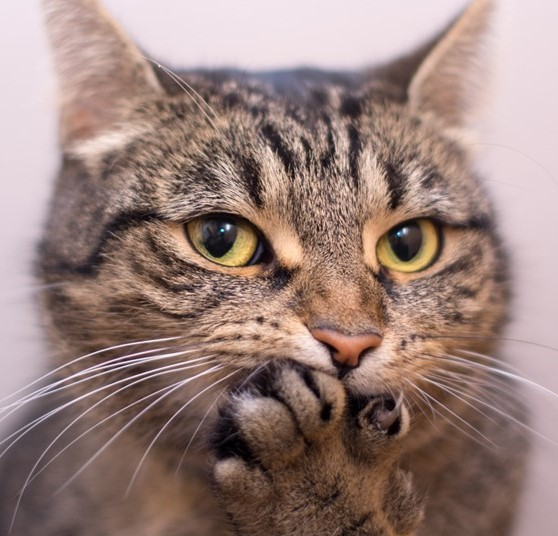

Zdrowie naszych milusińskich jest najwazniejsze. Dlatego tak ważny jest własściwy dobór składnikow odżywczych. Jaka karma? Mokra. Mięsna. Z tauryną. Możesz dla wzmocnienia dawać, do codziennej porcji karmy, krople witaminy D.
KOTOLANDIA
Zdrowie naszych milusińskich jest najwazniejsze. Dlatego tak ważny jest własściwy dobór składnikow odżywczych. Jaka karma? Mokra. Mięsna. Z tauryną. Możesz dla wzmocnienia dawać, do codziennej porcji karmy, krople witaminy D.
Dodatki do żywności